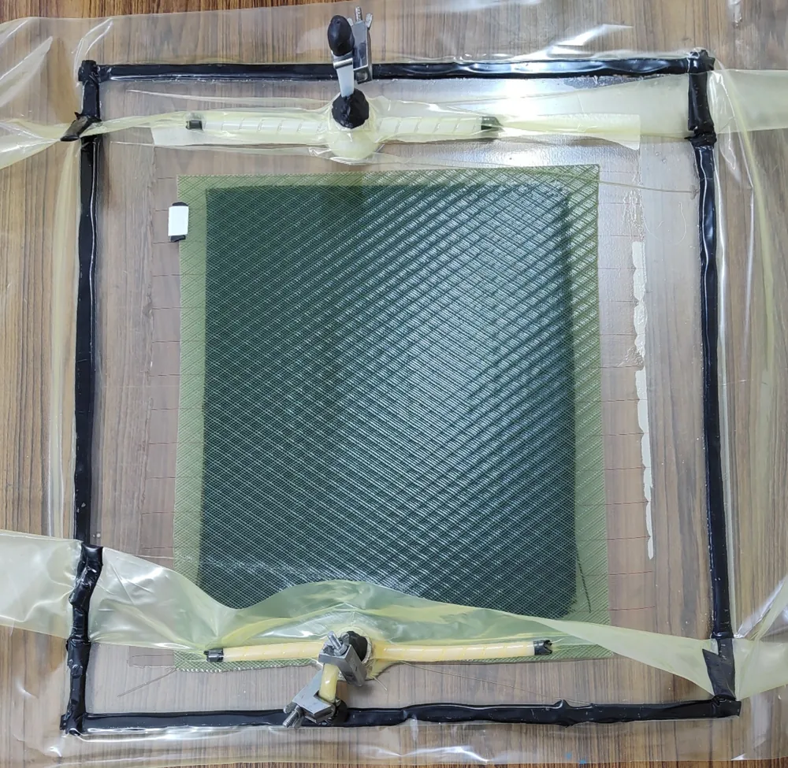
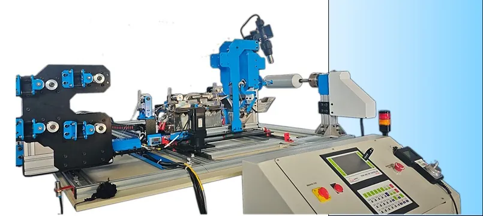
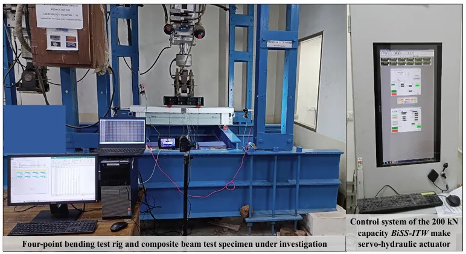

01
Vacuum-assisted resin transfer moulding (VARTM)
Void-free laminates of natural, synthetic and hybrid fibre.
Home / Facilities
Manufacturing, testing and structural design in the composites and structures laboratories of BITS Pilani.
Capabilities
Fabrication, testing and structural design in the composites and structures laboratories of the Department of Civil Engineering, BITS Pilani.

Void-free laminates of natural, synthetic and hybrid fibre.

Continuous profiles, rebar and tubular sections.

200 kN servo-hydraulic actuatorFour-point bending rig with a 200 kN servo-hydraulic actuator for full-scale beam tests, plus impact (drop-weight) testing and a universal testing machine.
Nonlinear FE analysis and design guidelines for FRP and functionally graded structures, from earthquake-resistant design to fire resistance.
Process line
Where we are
0–6months
Select the first two to three market product families; shortlist fibre, matrix and hybrid architectures.
6–12months
Mechanical baseline plus moisture, thermal and environmental durability testing.
12–18months
Wall panels, plates and shells, beam sections and tubular sections.
Tell us what you are working on. We reply within two working days.